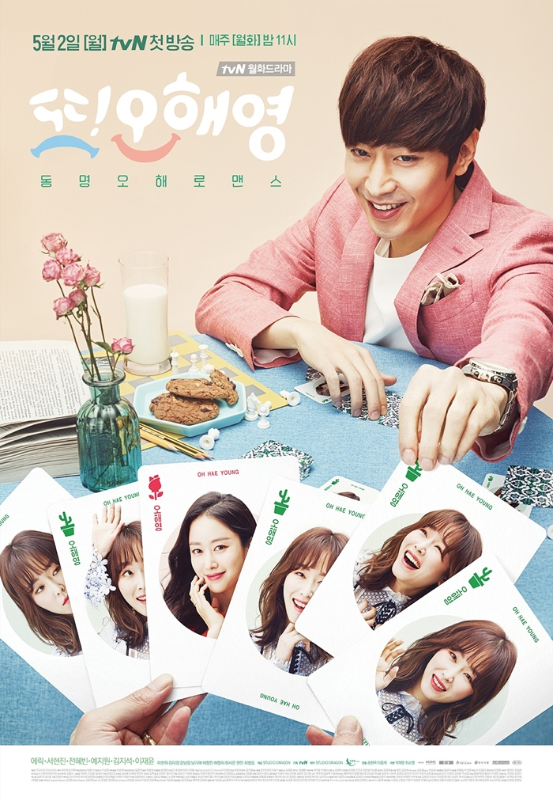
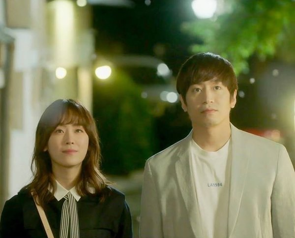

Park Do-kyung (Eric Mun) is a sound director in his 30s. A year ago, his bride, Oh Hae-young (gold) (Jeon Hye-bin), disappeared on their wedding day leaving him miserable.  One year after that incident, Do-kyung was told that Hae-young is going to marry a young entrepreneur named Han Tae-jin (Lee Jae-yoon). Do-kyung exacted revenge by sabotaging Tae-jin's business leaving him bankrupt. However, the woman who has the name Oh Hae-young (soil) (Seo Hyun-jin) was actually just a stranger who coincidentally has the same name with the other Oh Hae-young (gold) who left him.
Coincidentally, Oh Hae-young (soil) is the girl that Do-kyung had been seeing lately in his visions, and he sees snapshots of the future with her in it. Tae-jin was soon to be sent to jail due to bankruptcy, and hence before his imprisonment he meets fiancée, Hae-young (soil), and tells her that he doesn't love her that much to marry her and wants to call off their wedding. Truthfully, Tae-jin was lying and his true intentions was to let her go so that she will gain happiness.  Amidst all of this, Do-kyung and Hae-young (soil)'s lives turn as they cross paths. After sharing similar unfortunate experiences of being dumped before their weddings, the two of them got even closer. Will Do-kyung start to fall in love with Hae-young (soil)? But, will Hae-young (soil) look at Do-kyung the same way when she finds out that he is the one who ruined her wedding? Is it a love story between two people who should not be destined to be together? Or will Do-kyung's visions of her actually prove that they are meant for each other?
Another Miss Oh(Another Oh Hae-young) is a South Korean television series starring Eric Mun, Seo Hyun-jin, Jeon Hye-bin. It replaced Pied Piper and broadcast on cable network tvN on Mondays and Tuesdays at 23:00 (KST) for 18 episodes[8][9] from May 2, 2016 to June 28, 2016.[10] The series held the record highest audience rating for a tvN Monday-Tuesday show and became one of the highest rated Korean dramas in cable television history. The drama was extended by 2 episodes and 2 specials.[11]